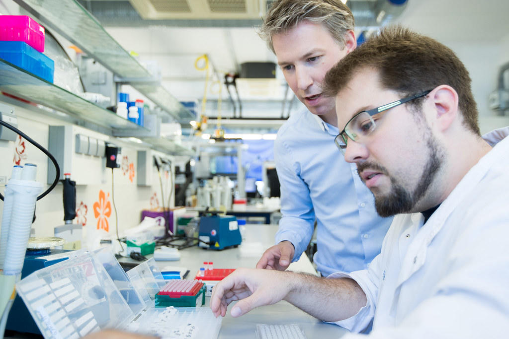

Profesorados


Profesorado en Enseñanza Media en Computación e Informática
En el Profesorado de Enseñanza Media en Computacion e Informática te especializarás en La enseñanza de herramientas tecnológicas de computación a nivel de software y hardware, así también en La comprensión y desarrollo de La robótica.
Más información
Profesorado de Enseñanza Media en Química y Biología
Esta carrera te formará como un profesional de calidad académica con excelente preparación en química y biología; y como docente con dominio en La aplicación de métodos y técnicas modernas y lúdicas para La enseñanza de Las ciencias naturales (química y biología)
Más informaciónLicenciaturas
Licenciatura en Informática
Esta carrera te formará como un profesional con sólidos conocimientos en el área tecnológica, capaz de desarrollar sistemas informáticos eficientes y soluciones innovadoras. Además, adquirirás habilidades en programación, bases de datos y desarrollo web, así como la capacidad de adaptarte a los constantes avances de la tecnología.
Más informaciónLicenciatura en Administración Educativa
Esta carrera te formará como un profesional con capacidad para gestionar, dirigir y mejorar instituciones educativas, aplicando principios administrativos y pedagógicos. Desarrollarás habilidades en planificación, organización y evaluación de procesos educativos, contribuyendo al fortalecimiento de la calidad académica.
Más informaciónMaestrías
Maestría en Educación con Especialidad en Tecnología Educativa
Esta maestría te formará como un profesional altamente capacitado en el uso de herramientas tecnológicas aplicadas a la educación. Desarrollarás competencias para diseñar estrategias innovadoras de enseñanza, integrar recursos digitales en el aula y mejorar los procesos de aprendizaje mediante el uso de la tecnología.
Más informaciónMaestría en Investigación Educativa
Esta maestría te formará como un profesional con habilidades en investigación científica aplicada al ámbito educativo. Aprenderás a analizar problemáticas educativas, diseñar proyectos de investigación y proponer soluciones que contribuyan al mejoramiento de la calidad educativa.
Más información